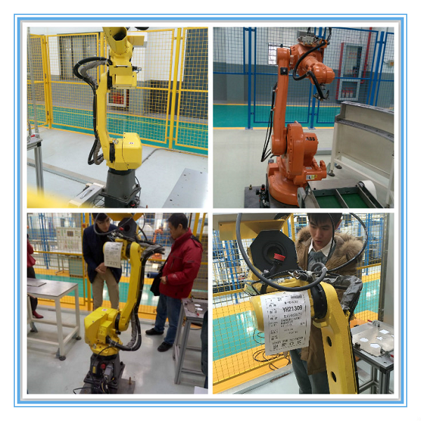
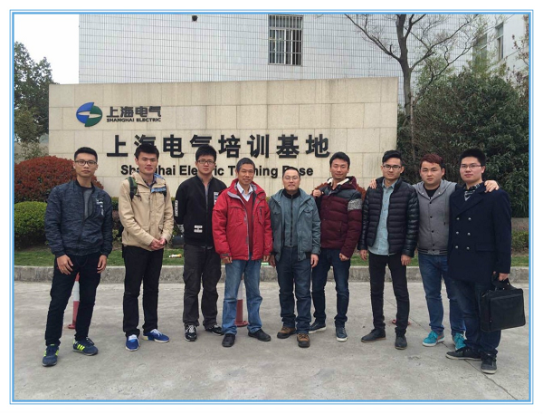

2016年3月17日下午4点，上海大学自强队部分成员参与的工业机器人培训在浦东大道2748号上海电气培训基地顺利结业，陈万米老师带领范彬彬，杜映峰，汪洋，刘振，贺永祥，张志松6人参加了此次培训。
本次工业机器人培训历经6日，分为六个课时：FANUC机器人以及机器人单元介绍、坐标系设置的理论与操作培训、程序的管理及操作、指令培训、FANUC机器人仿真操作、ABB机器人操作培训。培训活动邀请了企业资深老师来为大家讲课，引导学生进入工业机器人的世界。
整个培训过程中，同学们或多或少的遇到了很多难以解决的机械臂操作问题。但意识到工业机器人是用来解决实际问题的，也是用来生产工业产品后，大家都通过思考巧妙的避开了这些死角。就像钱伟长校长曾说过的一样：“领悟过程就像走马路，会有很多障碍，有沟石块什么的。有的人碰到沟石块，他非得把沟填满，把石块搬掉才肯过去，把时刻和精力泡进小问题里去了。其实，只要你跨过去，绕过去就行。”
整个培训过程中，全体同学表现的非常积极，认真记录老师所讲的每一个关键点。此次培训帮助同学们构建对工业机器人的概念，学到了许多受益终生的知识，也为以后的学习、科研打下了基础。
上海大学自强队
2016.3.17